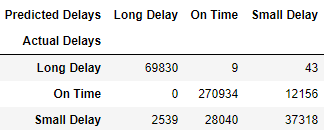

In this project, I use machine learning techniques such as Logistic Regression, Linear Regression, Random Forest, and Neural Network to predict arrival and departure delays of all of the major airlines during the first quarter of 2018.
Check out this project's github page for more detail on the code.
Logistic Regression
The Logistic Regression Analysis produced some interesting results. A rather simplified model using 10 featured for departure delays produced a fantastic model with an R2 of 95.86%, while this same model using departure delays over 15 minutes produced a model R2 of 99%!
The same cannot be said with regards to arrival delays. The best R2 that could be achieved was 88.54% using a model with 18 features. While this is not bad, a 90% R2 would be prefered. To make things worse, this model produced a R2 of 78.36% when used for arrival delays over 15 minutes. Many models were tested but the 18 feature model produced the best R2. It is unfortunate that it had the opposite effect when arrival delays of 15 minutes was used.
Decision Trees
Random Forest and Decision Trees did not end up being useful for this dataset. 14 Models were tested and those 14, 13 produced an R2 less than 85%. Not terrible, but not nothing to inspire confidence for predictions.
The one model to break the cycle was prediction Departure Delays that were 15 minutes or more. Utilizing the previous best model with 18 features, this model produced an R2 of 98.665%, by far the best score of any model tested of all the different procedures so far.
Linear Modelling
It is interesting to see that a model using 19 variables that are a mix of numeric and dummy variables produced very good prediction models for both departure and arrival delay times. However, dropping some the of the sparsely populated variables such as Carrier_delay while adding dummy variables for weekdays completely ruined the model. R2 scores for the model dropped from >.95 to <.40.
Stochastic Gradient Descent Classification
SGD Classifying provided perhaps the most insightful look of any of the machine learning techniques that were tested with the flight delay data. It was a great tool to stumble upon as it can work great with scaling and pca while taking under 10 seconds for a binary logistic model to be fit.
SGD is quite intense. While looking further into the theory behind it, it does a bit of the reverse of Stochastic Gradient Boosting. While the first 2 letters mean the same, the last one stands for Descending as it works the loss function in a descending way to smooth over potential errors through each model iteration (instead of an increasing the loss function).
The most concrete conclusion that can be made here is that we have found the best model for predicting if a flight will be delayed by 15 or more minutes. Utilizing 10 features (with all of them outside of wheels off being pretty reliable to track), this model consistently produced an R2 of 99% over 4 different machine learning techniques (Decision Trees, Stochastic Gradient Boosting, SGDClassifying as well as straight up Logisitic regression). Unfortunately, neither of the other two departure delay variables (straight up departure delays and departure delays split into 3 categories) could match these results. It was ultimately determined that in order to make good models for them, they would have to rely on information that would be impossible to consistently get for them (such as arrival time and the arrival delay dummy being significant for the 3 category departure delay model). In conclusion, departure delays of 15+ minutes will be the final variable used out of the 3 for departure delay predictions.
Unfortunately, as per usual, the models used for arrival delays were not up to the same standard. The best score produced was 83.73% for arrival delays over 15 minutes with 33 features. The final push for this project will be to figure out a model to break that glass ceiling of 90% for arrival delays.
Stochastic Gradient Boosting
Stochastic Gradient Boosting has some pretty nice effects with our flight delay data. For departure delays, our best model utilized 10 features with delays of 15+ minutes which produced another great R2 score, this time at 99%!. SGB with scaling provided another excellent model for departure delays.
However, arrival delays once again fell short of this standard. While better than any previous machine learning methods outside of straigh linear/logistic regression, the best R2 score achieved was 88.96% which was found with a model for arrival departures of 15+ minutes with 26 features. While 88.96% is not bad, a threshold of 90% at the minimum is preferred so other methods will have to be tried to finally achieve this.

Best Arrival Delay Models
Unfortunately, arrival delay predictions were nowhere near the quality of their departure delay counterparts. Perhaps this is due to the extra variance which can be seen when departure/arrival delays bar graphs are compared side by side.
Like departure delays, arrival delay were tested in 3 scenarios:
- Arrival Delays
- Arrival Delays over 15 minutes
- Arrival Delays broken up into 3 subcategories:
- Flight On Time
- Flight Delayed less than or equal to 15 minutes
- Flight Delayed over 15 minutes.
While a model for departure delays of over 15 minutes was consistently producing an R2 score over 99%, the best outcome among the 3 scenarios was arrival delays over 15 minutes which produced an R2 score just under 71%. More work would have to be done with this model to improve its prediction accuracy.
While the linear models yielded good results, the categorical model once again fell short, this time producing an R2 score of just over 51%. Perhaps it could be concluded that using a true/false variable outcome would work best for predicting both departure and arrival delays as both of those models held up the best with predictions against real data.
Best Departure Delay Models
All 3 scenarios were tested for departure delay predictions:
- Departure Delays
- Departure Delays over 15 minutes
- Departure Delays broken up into 3 subcategories:
- Flight On Time
- Flight Delayed less than or equal to 15 minutes
- Flight Delayed over 15 minutes.
While the linear model held up, only the logistic model for delays over 15 minutes produced a similar R2 score to its testing R2 score as both were over 99%! Testing this further, departure delays over 15 minutes were tested specifically for United Airlines and a similar score of 99% was produced. Good to see that we were able to determine a consistent model after various machine learning techniques were applied.
For this model, 10 features were found to be sufficient for predictions of departure delay over 15 minutes:
- Day of the Month
- Month
- Scheduled Departure Time
- Departure Time of Day Dummy Variable (morning, afternoon or night flight
- Weekday Dummy Variable
- Airline Dummy Variable
- Flight Number
- Time to Taxi out to runway
- Time when the flight actually takes off (aka wheels off the ground
- Weather Delay Dummy Variable
Unfortunately, the categorical model did not hold up as it would end up with a R2 score of just under 58%. It would seem more work would have to be done to find a model that worked when having more than 2 possible outcomes.
Improvement Models
Here we will try to improve upon the remaining 3 models which have not hit at least 90% accuracy. The 6 models tested are:
- Departure Delays -> 95.86%
- Departure Delays Over 15 Minutes -> 99%
- Departure Delays in 3 Categories: On Time, Delays under 15 Minutes, Delays over 15 Minutes -> 70.52%
- Arrival Delays -> 95.37%
- Arrival Delays Over 15 Minutes -> 83.73%
- Arrival Delays in 3 Categories: On Time, Delays under 15 Minutes, Delays over 15 Minutes -> 85.86%
Conclusions
The great challenge for predicting data is to determine what variables work best for a specific model. Of the many models tested, our best results in terms of prediction accuracy using the real data from the second quarter came from predicting departure delays of over 15 minutes using Scaled Stochastic Gradient Descending + Priciple Component Anaylsis. This model provided 99% accuracy with predictions while producing results with 500,000+ rows of data in under 5 minutes.
Through the many techniques tried, Stochastic Gradient Descending was the best in terms of time and consistency with our models. It took about a fifth of the time that the other complex techniques took to finish. These methods included K nearest neighbors, Support Vector Machine Regression and a Neural Network however they did not produce any models that provided better results in a timely matter as their models took over an hour to fully process. We also tested out many different basic linear regression models which proved to be the best fit for simple predictions of second quarter data.